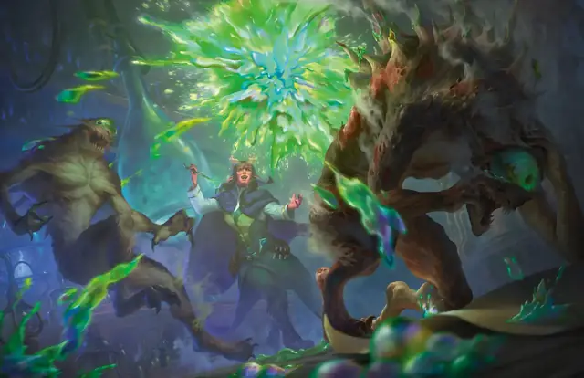

Едкий шар
Vitriolic Sphere
4 уровень, Воплощение

Время сотворения Действие
Дистанция 150 футов
Компоненты В, С, М (капля желчи)
Длительность Мгновенная
Подклассы Алхимик (Артефактор)
В указанной вами точке в пределах дистанции появляется сияющий шар кислоты диаметром 1 фут, взрывающийся Сферой радиусом 20 футов. Каждое существо в этой области должно совершить спасбросок Ловкости. При провале существо получает 10к4 урона Кислотой и ещё 5к4 урона Кислотой в конце своего следующего хода. При успехе существо только получает половину первичного урона.
Используя ячейку заклинания большего уровня. Первичный урон увеличивается на 2к4 за каждый уровень ячейки выше 4-го.